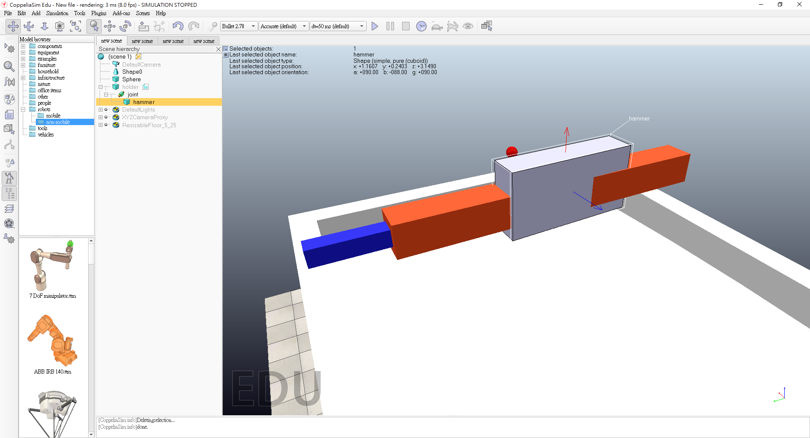

第七周 <<
Previous Next >> 第十四周
第十三周
控制物體單一軸向移動
物體和關節設置主從關係，將物體至於關節下，並將物體固定在關節上

控制語言為Lua
threadFunction=function()
while sim.getSimulationState()~=sim.simulation_advancing_abouttostop do
-- Read the keyboard messages (make sure the focus is on the main window, scene view):
message,auxiliaryData=sim.getSimulatorMessage()
while message~=-1 do
if (message==sim.message_keypress) then
if (auxiliaryData[1]==2010) then
-- up key
velocity=100
torque=200
hammer_back = 0
end
if (auxiliaryData[1]==2009) then
-- down key
velocity = -100
torque=-200
hammer_back = 1
end
end
message,auxiliaryData=sim.getSimulatorMessage()
end
-- We take care of setting the desired hammer position:
if hammer_back == 1
--then sim.setObjectPosition(hammer,-1, position)
then sim.setJointPosition(joint, -1, orientation)
end
sim.setJointTargetVelocity(joint,velocity)
-- Since this script is threaded, don't waste time here:
sim.switchThread() -- Resume the script at next simulation loop start
end
end
-- Put some initialization code here:
-- Retrieving of some handles and setting of some initial values:
joint=sim.getObjectHandle('joint')
hammer=sim.getObjectHandle('hammer')
velocity=0
hammer_back=0
position=sim.getObjectPosition(hammer,-1)
-- Here we execute the regular thread code:
res,err=xpcall(threadFunction,function(err) return debug.traceback(err) end)
if not res then
sim.addStatusbarMessage('Lua runtime error: '..err)
end
-- Put some clean-up code here:
第七周 <<
Previous Next >> 第十四周